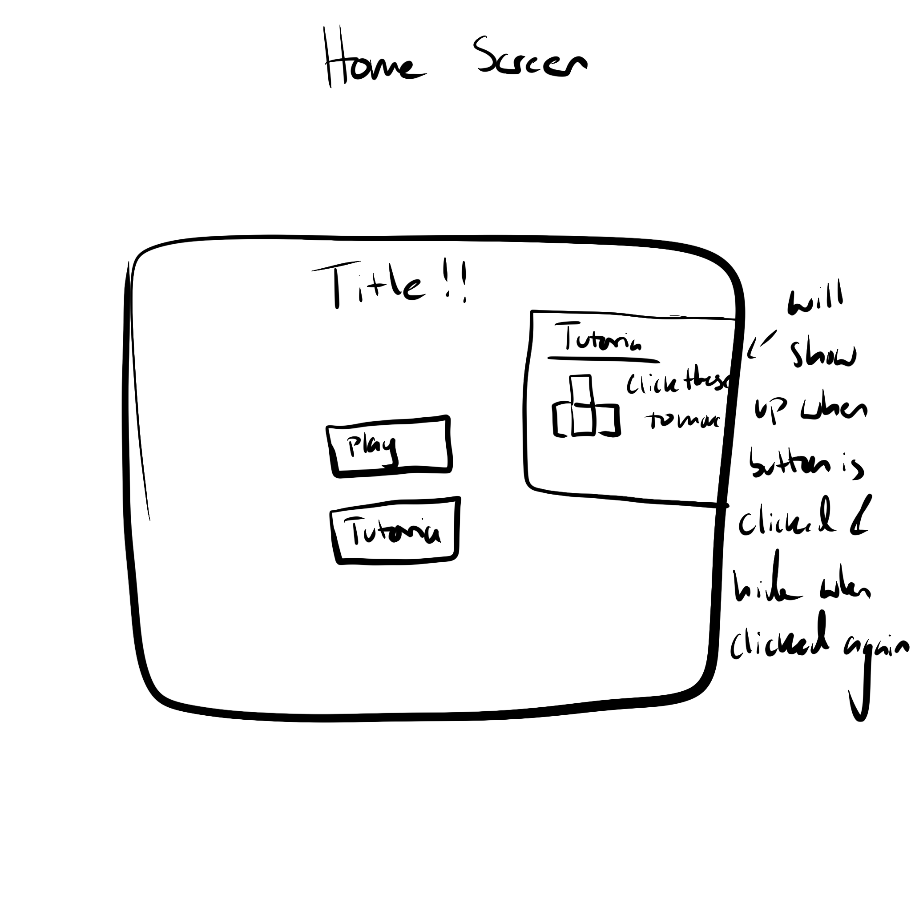
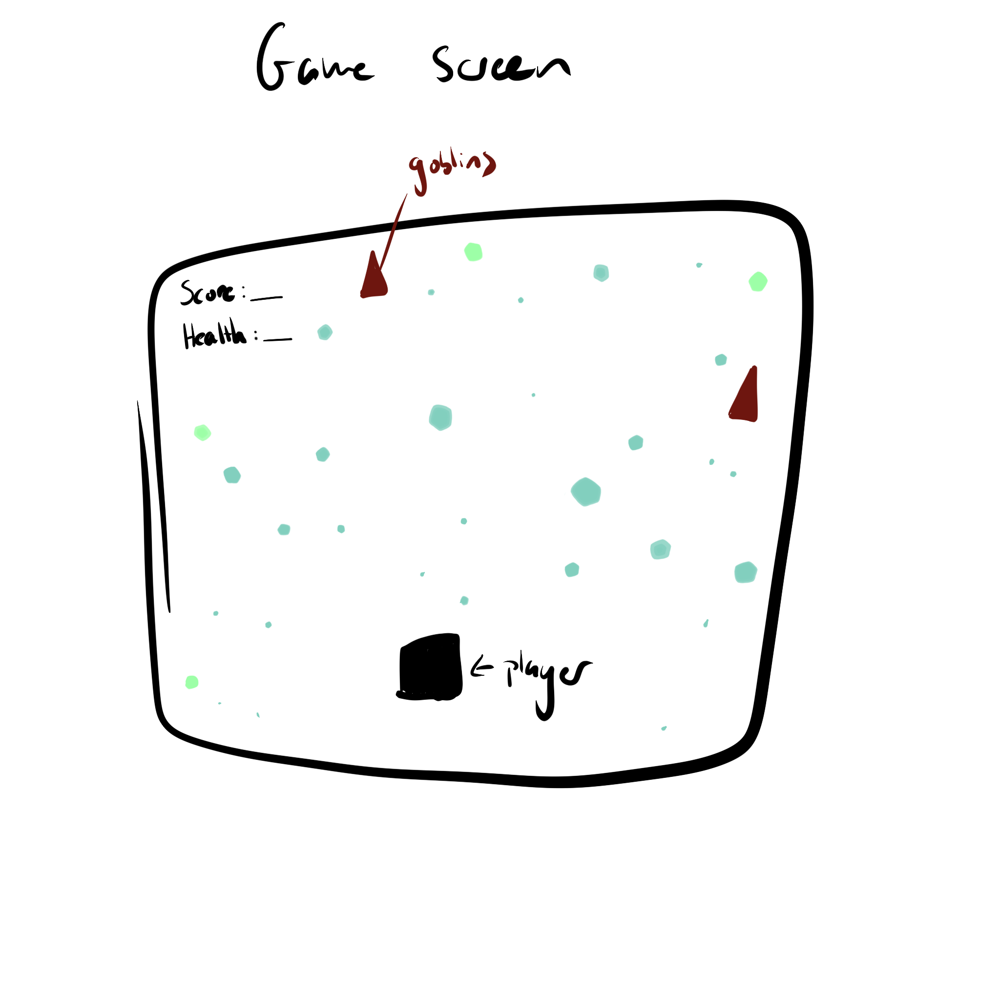
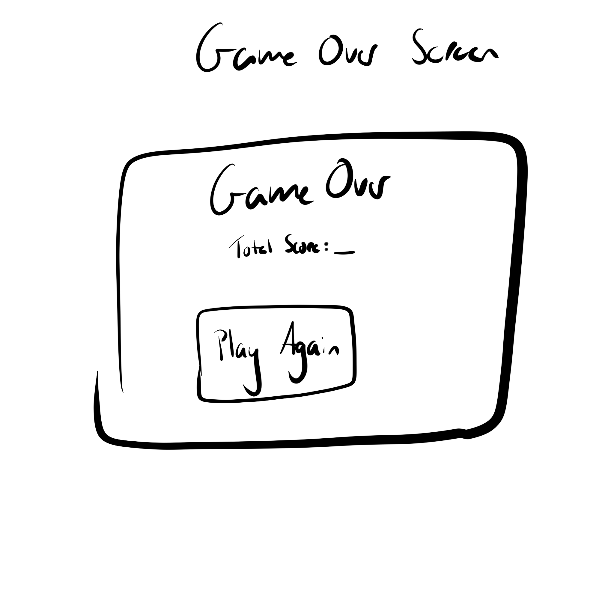

This game is like Pac-Man, but rather than a set map it's more free roaming and the enemies have their own goals as a twist.
Action
Desktop Web Based
Your a being that wants to collect these shiny rocks and some goblins keep getting in your way.
I want the assets to be 2d based, the colors will be a more varied and for the special power up rock I was thinking for making it look different rather than just changing the it's color.
I was thinking of adding on the home screen a small guide since ithe main mechanic is using WASD or arrow kepos to move your character only orthogonally. While in the game screem there are shiny rocks and the player needs to collide with the rocks to collect them while goblins are either chasing them or collecting the rocks too. There is a special rock that allows the user to attack the goblins but there is a set amount of time you can use it.



My name is Tanvee Padhi and I am a Game Design and Develope major at RIT. My skill set includes programming C#, Java, C++, HTML and CSS. I also have skills in making 2d assets for games. I have a lot of interests that diverse from a creative side like drawing and photography to watching films and play games.